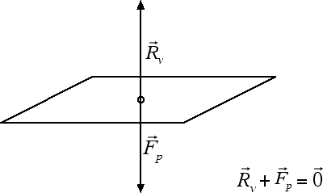
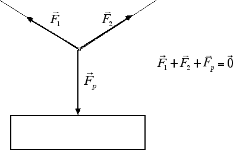

Equilibrio per traslazioni
Forza equilibrante, reazione vincolare
Abbiamo visto nella sezione precedente che la condizione di equilibrio per traslazioni è l'annullamento della forza totale (detta anche risultante) applicata al corpo. Vediamo quali conseguenze ha questa condizione di equilibrio. Supponiamo che ci sia una forza che agisce su un corpo. Evidentemente il corpo non è in equilibrio. Come facciamo a ripristinare la condizione di equilibrio? Possiamo aggiungere una seconda forza uguale ed opposta alla prima, ossia una forza con ugual direzione, uguale intensità ma verso opposto. Una forza con queste caratteristiche è detta forza equilibrante.
Un esempio in cui entra in gioco la forza equilibrante è quello di un corpo posto su un tavolo. Sappiamo che ogni corpo dotato di massa è soggetto a una forza-peso. Perché allora il corpo risulta essere in equilibrio? Evidentemente perché esiste una forza in grado di equilibrare la forza-peso del corpo: il tavolo, con la sua presenza, esercita una forza sul corpo uguale ed opposta alla forza-peso. Questa particolare forza equilibrante prende il nome di reazione vincolare del piano:

Notiamo come la reazione vincolare è uguale ed opposta alla forza-peso applicata. Questo vuol dire che la reazione vincolare non ha un'intensità definita: se cambio la forza-peso dell'oggetto, cambierà anche la reazione vincolare in modo tale da compensare l'intensità della nuova forza-peso. È una situazione simile a quella che avveniva per la forza d'attrito statico, che è sempre uguale ed opposta alla forza parallela applicata. Come esiste un valore massimo della forza d'attrito statico, così anche la reazione vincolare riuscirà a compensare la forza-peso fino a un valore massimo di quest'ultima. Oltre questo valore massimo, il vincolo si rompe e non è più in grado di garantire una condizione di equilibrio.
Ovviamente la forza peso di un corpo può essere equilibrata anche per mezzo di più forze, come nel caso dell'insegna in figura tenuta in equilibrio grazie alla tensione esercitata da due fili:

Usando la regola del parallelogramma è facile verificare graficamente che la somma vettoriale delle due tensioni esercitate dai fili obliqui è esattamente uguale alla forza-peso dell'insegna. In questo modo la risultante di tutte le forze è uguale a zero e l'insegna risulta in equilibrio.